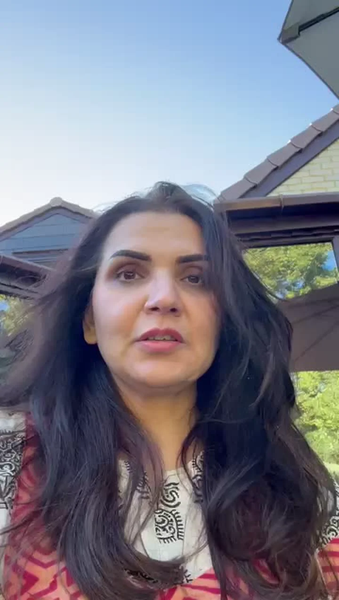

Brainology
Rishton, kaam aur paison se judi apni soch aur aadaton ko samajhna.
Iske baare mein poochhein ↗Hand Holding Program
Narayani ke saath 6 mahine ki personal guidance
Rishte, career, paisa aur apni wellbeing par lagataar kaam karna chahte hain? Personalised Hand Holding Program mein Narayani se salah lein, use apni zindagi mein aazmayein aur jo mushkil aaye, us par dobara baat karein.
Fees, format aur availability team se confirm karein.
Narayani ko suniye 01:21
Duniya bhar ke CEOs, CTOs, entrepreneurs aur women in business ka bharosa.
 Narayani Garg ki kitaabChange Your Mind,
Narayani Garg ki kitaabChange Your Mind,Consultation ke topics
Aapki zaroorat ke hisaab se in services par baat ho sakti hai. Aapke programme mein kya shaamil hoga, joining se pehle tay karein.
Rishton, kaam aur paison se judi apni soch aur aadaton ko samajhna.
Iske baare mein poochhein ↗Narayani ke saath consultation
Ek session mein baat samajh aa sakti hai. Lekin aadatein badalte waqt mushkilein bhi aati hain. Programme mein un par Narayani se dobara baat kar sakte hain.
Kin baaton par kaam karna chahte hain, Narayani ke saath samjhein.
Jo salah ya practice tay hui hai, use apne roz ke routine mein aazmayein.
Jo mushkil aa rahi hai aur jo badal raha hai, us par review karein.
Aapke liye kaunsa option?
Ek sawaal ya faisle par baatcheet. Programme join karna zaroori nahi.
Brainology consultation dekhein ↗Apni soch aur aadaton par kaam karte waqt Narayani ki guidance. Kitni baar baat hogi aur kya shaamil hoga, pehle tay karein.
Programme ke baare mein poochhein ↗Unhi ki zubaani
Yeh clients Narayani ki guidance ke apne experiences bata rahe hain. Har video is page wali service ke baare mein nahi hai.

Video ka saar
Navleen parivaar ke bade faislon mein Narayani se baat karne ka experience share karti hain.
Original video dekhein · 2:22 ↗
Video ka saar
London mein rehne wali client business aur personal life mein Narayani ki guidance ke baare mein batati hain.
Original video dekhein · 1:20 ↗Agla kadam
Apne liye ya couple ke taur par enquiry karein. Team programme ka scope, contact schedule aur fees samjhayegi.
Pehle details lein. Fees aur available appointments jaanne ke baad booking karein.
WhatsApp par baat kareinWhatsApp khulega. Message padhkar aap khud bhejenge. Is page par personal details save nahi hoti.
Call karna chahein? +91 92055 11101Pehle message mein medical records, home videos ya kisi aur ki private details na bhejein.
Booking se pehle
Kitni baar baat hogi, kis tarah contact karna hai aur kab jawab milega, yeh joining se pehle tay hoga. Programme mein unlimited ya 24/7 access ka vaada nahi hai.
Haan. Focused consultation alag option hai. Six months ke programme ka decision baad mein bhi le sakte hain.
Dono ke liye enquiry kar sakte hain. Apna country, time zone aur preferred format team ko batayein.
Team batayegi ki session kaise hoga, kitni der chalega, fees kya hai aur appointment kab mil sakta hai. Payment se pehle cancellation aur refund ke rules bhi poochhein.
Yeh personal aur spiritual guidance ka programme hai. Medical, mental-health, legal ya financial professional ki jagah nahi leta. Baat karne ka schedule aur jawab dene ka samay joining se pehle confirm karein.